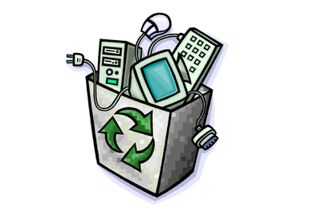

Conheça os robôs mais curiosos criados por Raspberry Pi
Postado em 12 de Dezembro 2016Depois de 10 milhões de unidades vendidas para usuários de perfis que vão do curioso ao inventor, o Raspberry Pi acabou se tornando uma plataforma relevante para o desenvolvimento de projetos caseiros de robótica. Embora o Arduino seja mais ideal para esse tipo de uso, a natureza livre e fácil de usar, desenvolver e hackear do Raspberry Pi acabou dando aos computadores desse tipo espaço também entre os robôs, já que a exemplo do Arduino, a placa é barata e pode funcionar aliada a um enorme conjunto de periféricos e sensores compatíveis.
RobotPiv 1.0
Esse projeto mostra um robô com sensor ultrassônico, capaz de detectar obstáculos para evitá-los. O termo “sensor ultrassônico” pode assustar, mas na verdade trata-se de um HC-SR04, sensor compatível com Raspberry muito usado pela comunidade de inventores e que no Brasil é fácil de achar por preços abaixo de R$ 15. O problema, na verdade, é fazer o sensor funcionar, se comunicar com o Raspberry e garantir que o Raspberry entende as informações sobre obstáculos a tempo de corrigir a direção do robô. Como mencionamos, o RobotPiv 1.0 é um exemplo recorrente de um tipo de robô muito construído com o Raspberry simplesmente porque é relativamente fácil de montar e ideal para iniciantes em eletrônica, desenvolvimento e em Linux. O projeto do RobotPiv 1.0, em específico, está liberado em open-source para quem quiser copiar e fazer o seu. Postado por Tamires FernandesPi Tank
Postado em 12 de Dezembro 2016A parte mais legal desse projeto é o uso de um Raspberry Pi 2 numa construção completamente open-source: ou seja, você pode baixar os arquivos do projeto para imprimir os pedaços do robô em uma impressora 3D. Associado a um Kinect, o Pi Tank pode ser controlado por celular e permite que desenvolvedores criem aplicações para ele: com criatividade, é possível escrever um software que dê comportamento mais autônomo ao robô.
BrickPi
Essa iniciativa é bem bacana porque, de certa forma, é mais acessível que o exemplo anterior. Enquanto o Pi Tank precisa de uma impressora 3D para confecção de alguns componentes, o BrickPi tem como proposta o uso do Lego para a construção de das partes móveis e estruturas de um robô. Para criar um robô com Lego, o interessado precisa de uma variedade de peças do tipo Technic do jogo de montar, um Raspberry Pi e uma placa acessória, que se conecta ao Raspberry e é responsável por distribuir sinais elétricos pelos componentes de Lego usados no projeto. Lego oferece inúmeras possibilidades para montar robôs: desde dispositivos dotados de capacidade de movimento e detecção de obstáculos a projetos mais audaciosos, como braços mecânicos e etc. O problema do BrickPi é o custo, relativamente alto (US$ 180 para o kit inicial, equivalente a R$ 585), e o fato de que o usuário precisa ter acesso a conjuntos do Lego Technic, que, normalmente, também são caros. Postado por Tamires FernandesCamJam EduKit 3
Postado em 12 de Dezembro 2016
O CamJam é um kit vendido para os que estão interessados em começar na robótica: ele vem com uma placa para acionamento de um motor elétrico, rodas, dois motores (um para cada roda), um estabilizador, sensor ultrassônico, sensor para identificar linhas, além de jumpers, resistores e outros componentes eletrônicos menos votados. O que você faz com tudo isso? A ideia é montar um robô com o Raspberry Pi ao centro, alimentado por pilhas. Com um pouco de curiosidade, o usuário pode configurar o uso do sensor ultrassônico para que o robô detecte, e evite, obstáculos no seu caminho. O sensor de linha pode ser usado para que a máquina reconheça linhas no chão e as siga. Um CamJam EduKit 3 pode ser encontrado por US$ 30 (R$ 97) em sites especializados.